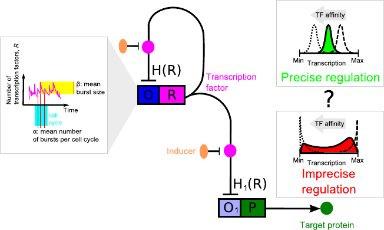

|
<< back
to home page Completed project: 7.2013-7.2015: Polish Ministry of Science Iuventus Plus grant 0501/IP1/2013/72 Theoretical study of conditions for precise gene regulation in a 2-gene cascade with autoregulation 
In [A.
Ochab-Marcinek, M. Tabaka, PNAS, 2010] we studied a
theoretical model of gene expression in the simplest
possible gene regulatory system: a two-step cascade
with noncooperative binding of transcription factors.
Such a system is deterministically monostable. We have
shown that in this system bimodal gene expression is
still possible: The reaction of binding of
transcription factors to DNA acts as a nonlinear noise
filter that transforms the unimodal distribution of
transcription factors over the cell population into the
bimodal distribution of proteins produced from the
regulated gene. We have found a simple method based on
geometric construction that allows one to predict the
onset of bimodality. These findings may explain the
experimentally observed bimodal response of cascades
controlled by the tetracycline repressor. In the current project, we extend our study to more complex regulatory motifs. We want to find the conditions for precise gene regulation in these systems. Scientific papers published as the result of the project:
|
|
|